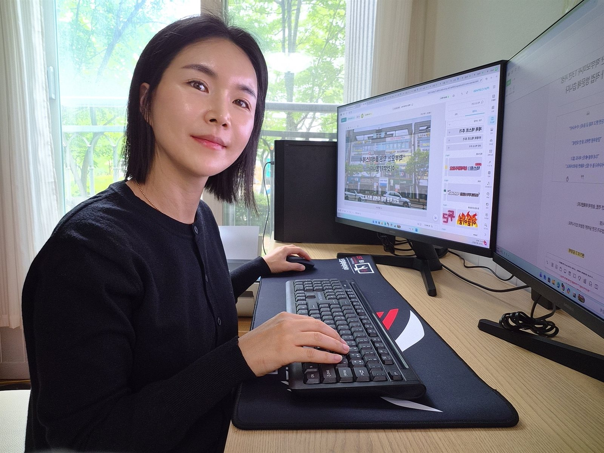
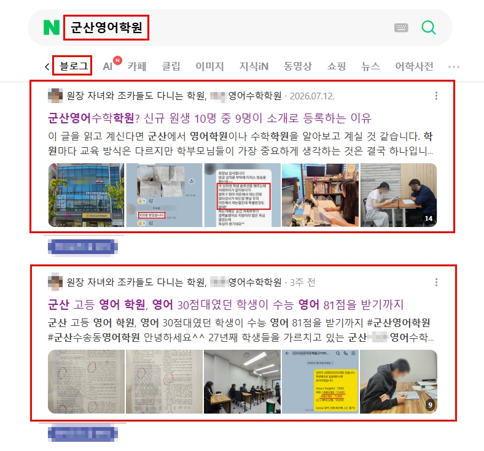
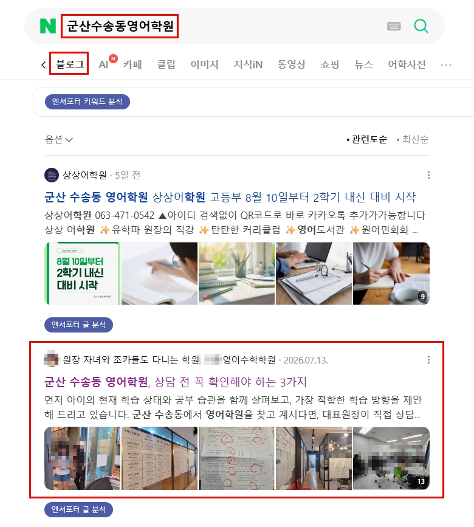
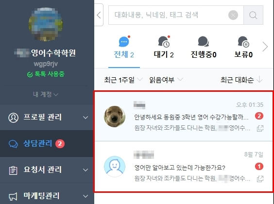

브랜드 블로그 · 플레이스 · 지역 마케팅 · 전국 상담
사업자의 입장에서 생각하는
마케팅
좋은 사업이 제대로 알려질 수 있도록
사업의 강점부터 찾습니다.
핸즈로그는 사업체를 먼저 이해하고, 고객이 선택할 이유를 찾아
콘텐츠와 온라인 채널에 담습니다. 브랜드 블로그를 중심으로
플레이스와 지역 마케팅까지 필요한 만큼 함께합니다.

마케팅을 해도
왜 생각만큼 효과가 없을까요?
- 블로그는 계속 올리는데 문의는 늘지 않는다
- 광고를 끄면 유입도 함께 멈춘다
- 대행을 맡겼는데 우리 업체의 실제 이야기가 보이지 않는다
- 이것저것 권유받지만 지금 우리 사업에 무엇이 필요한지는 모르겠다
HANDSLOG DIFFERENCE
핸즈로그는 바로 글부터 쓰지 않습니다.
사업을 해본 사람이 봅니다
약 13년 동안 직접 사업을 운영한 경험을 바탕으로, 마케팅을 맡기는 사업자의 입장에서 사업을 봅니다.
바로 상품부터 권하지 않습니다
현재 사업과 온라인 채널을 먼저 살펴보고 무엇이 필요한지 판단합니다.
업체마다 다른 강점을 찾습니다
대표의 경험, 서비스 방식, 고객관리, 현장 모습 등 고객이 선택할 수 있는 이유를 찾습니다.
노출에서 끝내지 않습니다
콘텐츠를 본 사람이 실제 상담과 문의까지 이어질 수 있도록 동선까지 함께 고민합니다.
PROCESS
핸즈로그는 이렇게 일합니다
- 01 사업을 듣습니다 대표와 사업의 현재 상황을 이해합니다.
- 02 현재 채널을 봅니다 블로그, 플레이스, SNS 등 기존 온라인 상태를 확인합니다.
- 03 고객의 입장에서 분석합니다 고객은 무엇을 검색하고, 무엇 때문에 선택하는지 살펴봅니다.
- 04 필요한 마케팅을 정합니다 무조건 모든 채널을 권하지 않습니다.
- 05 직접 실행합니다 기획한 방향을 실제 콘텐츠와 채널 운영에 적용합니다.
- 06 결과를 보고 수정합니다 반응과 결과를 확인하고 다음 방향을 조정합니다.
SERVICES
필요한 마케팅부터 시작합니다
브랜드 블로그
사업의 강점을 검색되는 콘텐츠 자산으로 만듭니다.
사업 분석 → 고객/검색 의도 분석 → 키워드 선정 → 콘텐츠 기획 → 원고 작성 → 발행 → 문의 동선 구축
네이버 플레이스
검색한 고객이 실제 방문과 문의를 고민할 때 신뢰할 수 있도록 기본 정보와 콘텐츠를 관리합니다.
지역 마케팅
사업 특성에 따라 당근 등 지역 고객과 만날 수 있는 채널을 활용합니다.
추가 온라인 마케팅
사업 상황에 따라 필요한 온라인 마케팅을 함께 진단하고 제안합니다.
사업 상황과 필요한 운영 범위에 따라 상담 후 제안드립니다.
서비스 상담하기CASE STUDY
첫 번째 실제 운영 사례
교육업 · 브랜드 블로그 운영
군산 지역 교육 브랜드
학원의 실제 운영 방식과 원장의 강점이 온라인에서 충분히 보이지 않고 있었습니다.
원장 인터뷰를 진행하고 학부모 관점에서 검색 의도와 콘텐츠 방향을 분석했습니다.
- 학원의 실제 강점 정리
- 지역 키워드 선정
- 콘텐츠 주제 기획
- 블로그 원고 작성 및 발행
- 네이버 톡톡 문의 동선 구축
- 지역 관련 키워드 검색 노출 확인
- 블로그 운영 기간 중 네이버 톡톡 수강 문의 2건 확인
※ 등록 여부는 별도로 확인되지 않았으며, 블로그 콘텐츠와의 직접적인 인과관계는 단정하지 않습니다.

네이버 블로그 지역 키워드 검색 노출 사례 · '군산영어학원'
네이버 블로그 세부 지역 키워드 검색 노출 사례 · '군산수송동영어학원'
블로그 운영 기간 중 확인된 네이버 톡톡 수강 문의학원 사례이지만 핸즈로그의 방식은 업종이 아니라 사업체의 강점에서 시작합니다.
13년간 사업자의 자리에서
고민했습니다
의류 매장을 약 10년, 이후 문제성 발관리 사업을 약 3년 운영했습니다.
직접 장사를 하면서 매출이 잘 나올 때도 있었고, 손님이 오지 않아 고민했던 때도 있었습니다. 그때마다 ‘왜 고객이 우리 가게를 선택해야 할까?’, ‘어떻게 알려야 할까?’를 계속 고민했습니다.
발관리샵을 운영할 때는 블로그를 직접 활용해 고객을 유입시키기도 했고, 그 경험을 계기로 마케팅에 더 관심을 갖게 됐습니다.
그래서 지금은 마케팅을 파는 사람의 입장보다 사업자의 입장에서 먼저 생각하는 마케팅을 하고 싶습니다.
- 의류 매장 약 10년
- 문제성 발관리 사업 약 3년
- 현재 핸즈로그 운영
마케팅보다 먼저,
사업의 본질을 봅니다
마케팅만으로 부족한 상품이나 서비스를 오래 성공시키기는 어렵다고 생각합니다.
하지만 좋은 상품과 서비스가 있는데 그것이 고객에게 제대로 알려지지 않고 있다면, 마케팅은 사업이 더 크게 성장할 수 있도록 도와줄 수 있습니다.
핸즈로그는 없는 장점을 만들어내기보다 이미 그 사업 안에 있는 좋은 이유를 찾아 제대로 알리는 일을 하고 싶습니다.
하지 않는 것도
핸즈로그의 기준입니다
- 확인되지 않은 성과를 약속하지 않습니다.
- 모든 업체에 같은 콘텐츠를 만들지 않습니다.
- 필요하지 않은 서비스를 무리하게 권하지 않습니다.
- 확인되지 않은 결과를 성공사례로 포장하지 않습니다.
자주 묻는 질문
어떤 업종도 가능한가요?
업종을 제한하지 않습니다. 교육업 사례를 대표 사례로 소개하고 있지만, 업종에 관계없이 사업 내용을 먼저 파악한 뒤 상담해 드립니다.
지역이 달라도 가능한가요?
네, 가능합니다. 핸즈로그는 온라인을 기반으로 전국 사업자와 함께하며, 자료 공유와 화상·전화 상담만으로 대부분의 과정을 진행합니다.
무엇을 맡겨야 할지 모르겠는데 상담 가능한가요?
네, 가능합니다. 무엇이 필요한지부터 진단받고 싶은 분들이 많이 찾아주십니다. 현재 사업과 온라인 채널 상태를 먼저 살펴본 뒤 필요한 부분을 안내해 드립니다.
블로그가 없어도 가능한가요?
네, 새로 개설하는 경우도 자주 진행합니다. 기존 블로그가 있다면 현재 상태를 먼저 점검한 뒤 운영 방향을 제안해 드립니다.
브랜드 블로그만 맡길 수 있나요?
네, 가능합니다. 브랜드 블로그를 기본으로 하되, 플레이스나 지역 마케팅은 필요할 때만 상담을 통해 추가로 결정하시면 됩니다.
플레이스도 함께 관리할 수 있나요?
네, 가능합니다. 사업 특성에 따라 네이버 플레이스의 기본 정보와 콘텐츠를 블로그와 함께 관리해 드릴 수 있습니다.
사진은 어떻게 준비하나요?
보유하신 사진이 있다면 함께 활용하고, 부족한 경우 촬영 방법이나 준비 방향을 상담을 통해 안내해 드립니다.
효과는 언제부터 나타나나요?
사업 분야, 경쟁 강도, 기존 채널 상태에 따라 달라질 수 있어 특정 기간이나 결과를 확정적으로 약속드리지는 않습니다. 상담을 통해 현재 상황을 확인한 뒤 현실적인 방향을 안내해 드립니다.
상담 후 반드시 계약해야 하나요?
아닙니다. 먼저 사업과 현재 온라인 채널 상태를 살펴보고, 필요한 부분을 진단해 드립니다. 계약 여부는 상담 후 편하게 결정하시면 됩니다.
지금 필요한 마케팅이 무엇인지부터
함께 살펴보겠습니다.
무조건 많은 서비스를 권하기보다
현재 사업과 온라인 채널을 먼저 보겠습니다.
네이버 톡톡 · 카카오채널 · 전화 · 이메일